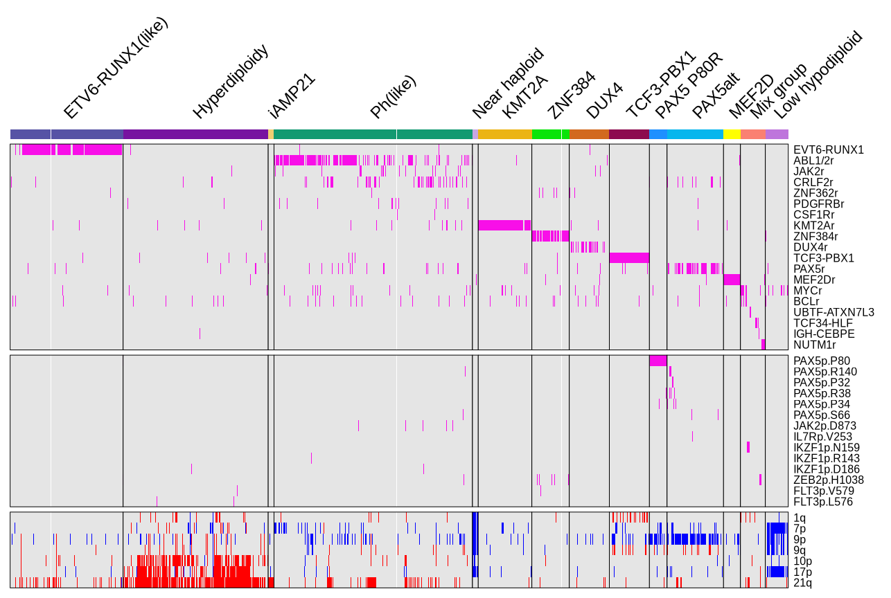
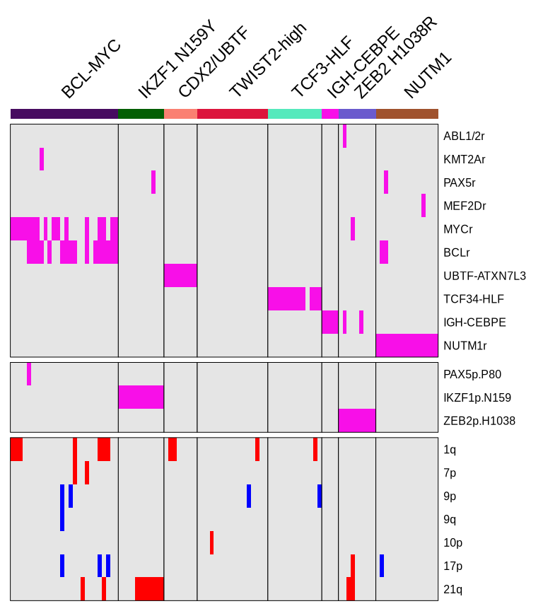
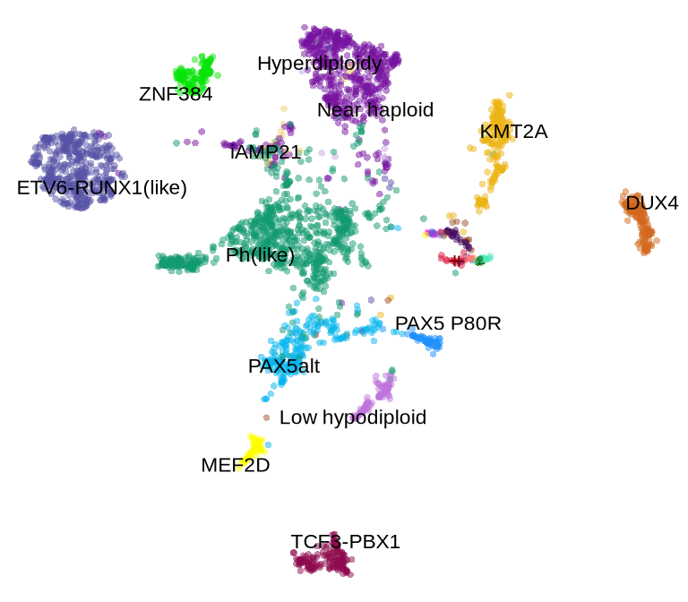
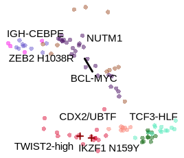

pkgs <- c("ggthemes", "jhtools", "glue", "ggsci", "patchwork", "tidyverse",
"circlize", "ComplexHeatmap", "SummarizedExperiment", "jhuanglabRNAseq",
"viridis","ggrepel", "tidygraph","ggraph")
for (pkg in pkgs){
suppressPackageStartupMessages(library(pkg, character.only = T))
}
out_dir <- "./results/sfig1" %>% checkdir
in_dir <- "./data" %>% checkdirsfig1
sfig1A-1
group_color <- glue("{in_dir}/group_color.rds") %>% read_rds
bigcod <- glue("{in_dir}/bigcod.rds") %>% read_rds
scaled_wd_heatmap <- glue("{in_dir}/big_fusion_matrix.rds") %>% read_rds
big_fusion_anno <- glue("{in_dir}/big_fusion_anno.rds") %>% read_rds
rowv <- glue("{in_dir}/big_fusion_rowsp.rds") %>% read_rds
ha <- HeatmapAnnotation(
sub_groups = big_fusion_anno,
col = list(
sub_groups = group_color
),
border = F,
simple_anno_size = unit(1.8, "mm"),
show_legend = F,
show_annotation_name = F
)
a <- Heatmap(scaled_wd_heatmap,
col = c("TRUE" = "#f80fe8", "Loss" = "blue", "1" = "orange", "Gain" = "red"),
na_col = "grey90",
column_split = factor(big_fusion_anno, levels = bigcod),
row_split = rowv,
clustering_method_columns = "ward.D2",
clustering_distance_columns = "spearman",
cluster_rows = F, cluster_columns = F,
show_row_names = T, show_column_names = F,
row_names_gp = gpar(fontsize = 6),
row_title = NULL,
top_annotation = ha,
column_title_rot = 45,
use_raster = F,
column_title_gp = gpar(fontsize = 9),
border = T,
border_gp = gpar(lwd = 0.5),
column_gap = unit(0, "mm"), show_heatmap_legend = F)
pdf(glue("{out_dir}/figS1A1.pdf"), width = 6.7, height = 4.5)
print(a)
d <- dev.off()
a
sfig1A-2
sub_scaled_wd_heatmap <- glue("{in_dir}/small_fusion_matrix.rds") %>% read_rds()
heatmap_ordereds <- glue("{in_dir}/small_fusion_anno.rds") %>% read_rds()
rowv_ft <- glue("{in_dir}/small_fusion_rowsp.rds") %>% read_rds()
group_color <- glue("{in_dir}/group_color.rds") %>% read_rds
subcod <- glue("{in_dir}/subcod.rds") %>% read_rds()
ha <- HeatmapAnnotation(
sub_groups = heatmap_ordereds$sub_types,
col = list(
sub_groups = group_color
),
simple_anno_size = unit(1.8, "mm"),
border = F,
show_legend = F,
show_annotation_name = F
)
a <- Heatmap(sub_scaled_wd_heatmap,
col = c("TRUE" = "#f80fe8", "Loss" = "blue", "1" = "orange", "Gain" = "red"),
na_col = "grey90",
column_split = factor(heatmap_ordereds$sub_types, levels = subcod),
row_split = rowv_ft,
clustering_method_columns = "ward.D2",
clustering_distance_columns = "spearman",
cluster_rows = F, cluster_columns = F,
show_row_names = T, show_column_names = F,
row_names_gp = gpar(fontsize = 6),
row_title = NULL,
top_annotation = ha,
column_title_rot = 45,
use_raster = F,
column_title_gp = gpar(fontsize = 9),
border = T,
border_gp = gpar(lwd = 0.5),
column_gap = unit(0, "mm"), show_heatmap_legend = F)
pdf(glue("{out_dir}/figS1A2.pdf"), width = 4, height = 4.5)
print(a)
d <- dev.off()
a
sfig1B-1
validdf <- read_rds(glue("{in_dir}/valid_newsamples.rds"))
umap_frame <- glue("{in_dir}/umap_frame.rds") %>% read_rds()
umap_label_frame <- glue("{in_dir}/umap_label_frame.rds") %>% read_rds()
group_color <- glue("{in_dir}/group_color.rds") %>% read_rds()
subcod <- glue("{in_dir}/subcod.rds") %>% read_rds()
a <- ggplot() +
geom_point(data = umap_frame %>%
dplyr::filter(sub_groups != "others"),
mapping = aes(x = V1, y = V2, color = sub_groups), size = 1, alpha = 0.5, shape = 16) +
geom_point(data = validdf, mapping = aes(x = V1, y = V2, color = sub_groups), size = 1, alpha = 1, shape = 3) +
theme_void() +
scale_color_manual(values = c("valid" = "#8B0000", group_color)) +
theme(legend.position = "none") +
geom_text_repel(data = umap_label_frame %>%
dplyr::filter(!sub_groups %in% subcod) %>%
dplyr::filter(sub_groups != "others"),
mapping = aes(x = x, y = y, label = sub_groups),
color = "black",size = 3,
max.overlaps = 1000)+
geom_rect(xmin = 3.4, xmax = 5.3, ymin = -1.3, ymax = 0.026,
fill = NA, linewidth = 0.5, color = "red", linetype = "dashed")
pdf(glue("{out_dir}/figS1B1.pdf"), width = 4, height = 3.5)
print(a)
d <- dev.off()
a
sfig1B-2
sub_validdf <- glue("{in_dir}/valid_newsamples_zoom.rds") %>% read_rds
subcod <- glue("{in_dir}/subcod.rds") %>% read_rds()
umap_label_framex <- glue("{in_dir}/umap_label_frame_sub.rds") %>% read_rds()
a <- ggplot() +
geom_point(data = umap_frame %>%
dplyr::filter(sub_groups %in% subcod) %>%
dplyr::filter(V1 > 2.3),
mapping = aes(x = V1, y = V2, color = sub_groups), size = 0.8, alpha = 0.5, shape = 16) +
geom_point(data = sub_validdf, mapping = aes(x = V1, y = V2, color = sub_groups), size = 0.8, alpha = 1, shape = 3) +
theme_void() +
scale_color_manual(values = c("valid" = "#8B0000", group_color)) +
theme(legend.position = "none") +
geom_text_repel(data = umap_label_framex,
mapping = aes(x = x, y = y, label = sub_groups),
color = "black",size = 2,
max.overlaps = 100000)
pdf(glue("{out_dir}/figS1B2.pdf"), width = 1.4, height = 1.2)
print(a)
d <- dev.off()
a